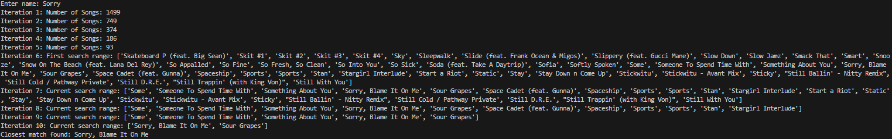

Sample Implementation
This sample implementation is designed to find the closest match to a given target string from a list of song names stored in a CSV file using binary search.
The csv library is used for reading and writing CSV files, while the SequenceMatcher class from the difflib module is used to compare pairs of sequences and calculate their similarity.
The is_close_match function checks if there are at least min_consecutive consecutive letters in the target string that match a substring in the candidate string.
In the binary_search_closest function, initial variables (left, right, closest_match, highest_similarity, iteration) are set up, and the target is converted to lowercase. The binary search loop continues while left is less than or equal to right. The middle index mid is calculated, and the current search range is logged after the 6th iteration, with the number of songs logged from the 1st to 5th iteration. SequenceMatcher is used to calculate the similarity between the target and the middle element. The is_close_match function checks if the middle element is a close match. If the current element has a higher similarity, closest_match is updated. If an exact match is found, the middle element is returned. The search range is adjusted based on lexicographical order.
In the read_csv_array function, an empty list named song_names and a list of encodings to try (utf-8, utf-16) are initialized. The function attempts to read the file using each encoding. It opens the file with the current encoding, reads the CSV file, and extends song_names with the rows. If reading is successful, the loop breaks; otherwise, it continues to the next encoding if a UnicodeDecodeError occurs. The function returns the list of all the song names.
